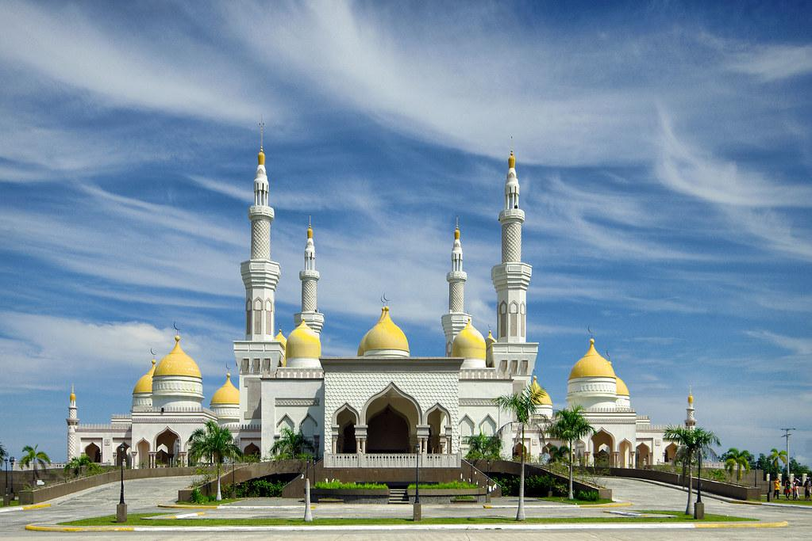
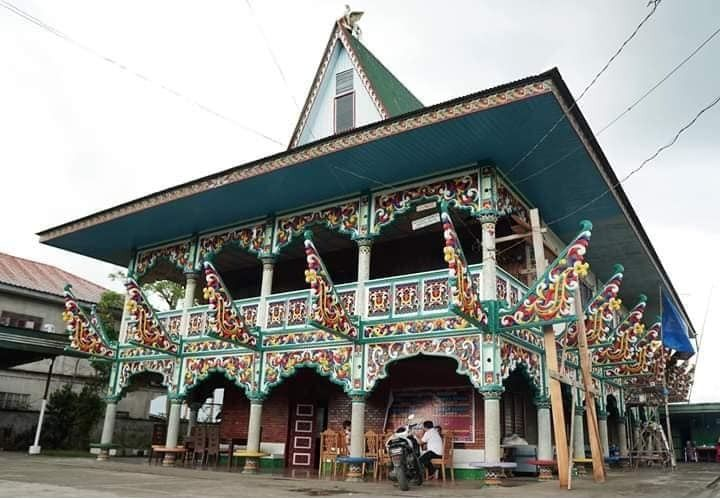
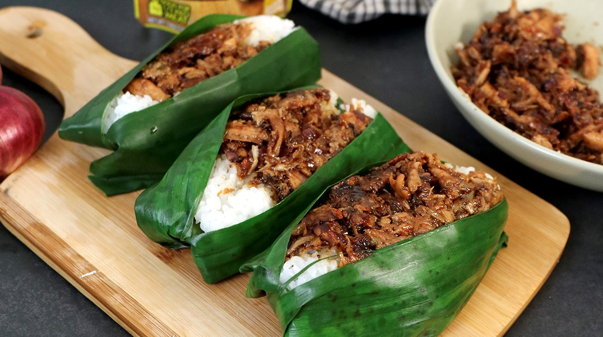
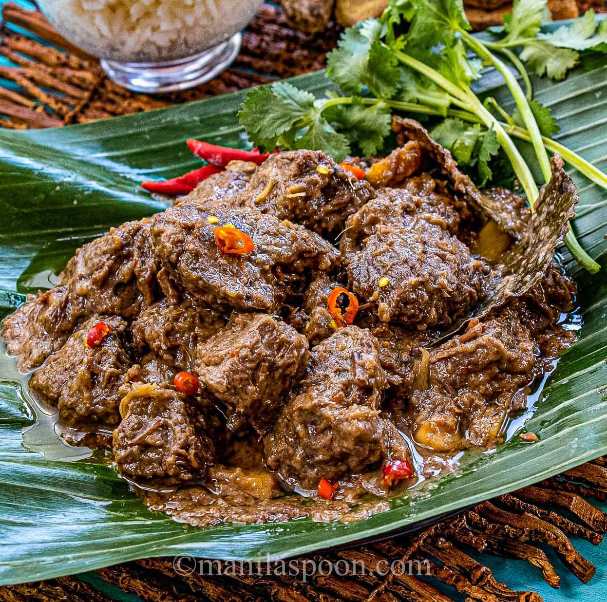
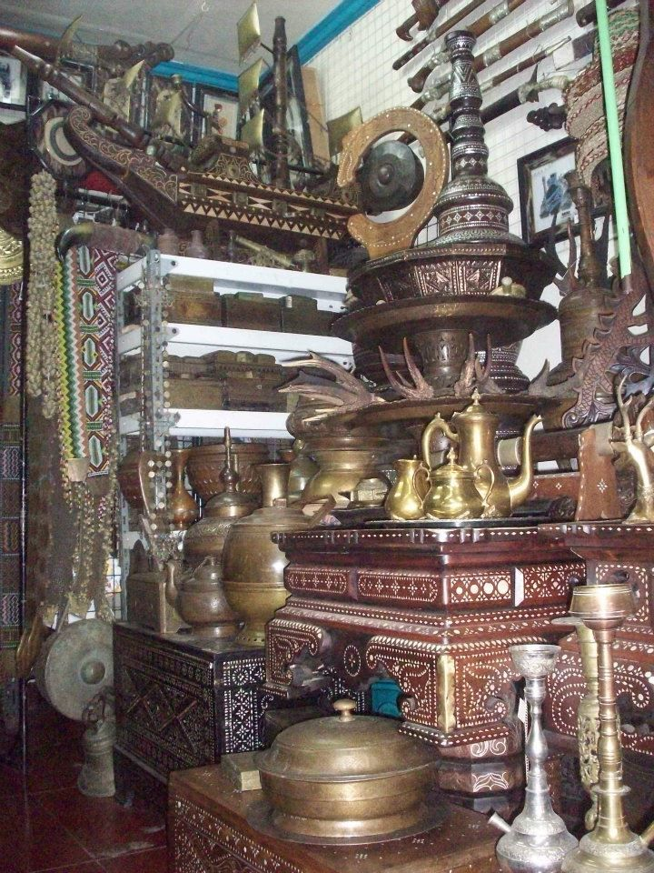

Island Hopping in Tawi-Tawi
Explore Panampangan Island, Sangay Siapo, and the Bud Bongao sacred peak.
Discover memorable adventures, authentic flavors, and centuries-old traditions
Islands, peaks, and waterfalls waiting to be explored
Explore Panampangan Island, Sangay Siapo, and the Bud Bongao sacred peak.

Hike up Tawi-Tawi's sacred mountain, accompanied by friendly wild macaques.

Visit Asik-Asik Falls in Alamada and the hidden springs of Maguindanao.
Sacred places and royal heritage across the region

Tour the Sultan Hassanal Bolkiah Mosque in Cotabato City.

Visit the Sheikh Makhdum Mosque in Simunul, the oldest Islamic structure in the country.

Discover classic Torogan architecture in Lanao del Sur.
Slow-cooked, spiced, and full of Bangsamoro flavor

Sample authentic Mindanao Pastil: steamed rice topped with shredded chicken or beef, wrapped in banana leaf.
Street favorite
Experience traditional Bangsamoro slow-cooked, spiced delicacies.
Rich & spicy
Enjoy traditional treats like Dodol and Tipas, with Palapa condiments on the side.
Take home something made by hand

Buy handwoven royal Inaul textiles directly from master weavers in Maguindanao.

Collect hand-carved Maranao brassware and Okir-designed ornaments in Marawi.